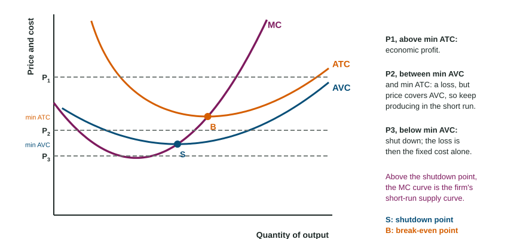

A ski rental shop makes a loss in a warm winter. Should it lock its doors tomorrow? It still owes rent on its lease whether it opens or not. If the rentals it can make bring in more than the staff and cleaning they cost, staying open shrinks the loss. Next year, when the lease ends, the question changes: stay in the business, or leave? Those are the two decisions of this topic.
The short run: produce or shut down?
In the short run a firm cannot escape its fixed cost. If it shuts down (produces nothing), it has no revenue and no variable cost, so its loss is exactly its total fixed cost. If it produces, it chooses the output where MR = MC and earns TR - TC. It should produce if that loss is smaller than the fixed cost.
That comparison reduces to one test, the shutdown rule: produce if the price is at least the lowest point of average variable cost; shut down if it is below. When P is above AVC, each unit covers its variable cost and something toward fixed cost, so producing cuts the loss.

| Price | Profit at the best output | Short-run choice |
|---|---|---|
| above the lowest point of ATC | economic profit | produce where MR = MC |
| at the lowest point of ATC | zero (break even) | produce |
| between the lowest points of AVC and ATC | a loss smaller than fixed cost | produce |
| below the lowest point of AVC | a loss larger than fixed cost | shut down: lose fixed cost only |
Worked example: a print shop at $10 a job. At its best output, 100 jobs a day, ATC is $12 and AVC is $8. The lowest point of AVC is $7.50.
- Produce: profit = dollars.
- Shut down: fixed cost = (ATC - AVC) x Q = dollars, so the loss is $400.
- Decide: producing loses $200 less. The rule agrees: $10 is above the lowest AVC, $7.50.
- If the price fell to $7, below $7.50, no output covers variable cost, so the shop shuts down and loses only its $400 fixed cost.
Two consequences. First, a fixed cost, such as higher rent, changes profit but not MC or AVC, so it does not change how much the firm produces in the short run. Second, for any price above the shutdown point the firm produces where its MR line meets MC, so the part of the MC curve above the lowest point of AVC is the firm's short-run supply curve.
The long run: enter or exit?
In the long run no cost is fixed: leases end and equipment can be sold. A firm stays only if it covers all its costs, including the owner's opportunity costs. That is where economic profit from Topic 3.4 does its work. In a market that firms can join and leave freely:
- Economic profit draws new firms in (entry). More sellers shift market supply right, and the price falls.
- Economic losses push firms out (exit). Fewer sellers shift market supply left, and the price rises.
- Entry or exit continues until the price reaches the lowest point of ATC, where the firms that remain earn zero economic profit (normal profit).
Write every link of this chain on the exam. Firms enter because of economic profit, not because of demand; then name the shift in market supply, the change in price and where it stops. A common slip is to say a firm shuts down whenever price is below ATC; the short-run test is the lowest point of AVC.